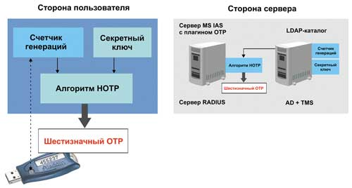
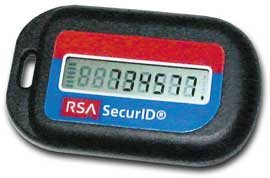
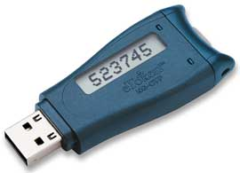
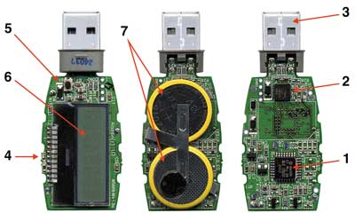
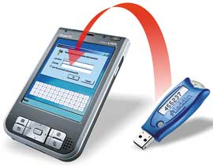

Как показывают последние исследования, одна из наиболее серьезных для компаний проблем в области информационной безопасности - несанкционированный доступ к компьютерным системам. По данным исследования CSI/FBI Computer Crime and Security Survey 2005, в прошлом году 55% компаний зарегистрировали инциденты, связанные с несанкционированным доступом к данным. Более того, в том же году компании потеряли вследствие неавторизованного доступа в среднем по 303 тыс. долл., причем по сравнению с 2004 г. убытки увеличились в шесть раз.
Естественно, для российских компаний цифры убытков будут совершенно иными, однако это не отменяет самой проблемы: несанкционированный доступ действительно наносит серьезный ущерб компаниям, независимо от того, осознает это руководство или нет.
Понятно, что надежность защиты от этой угрозы в первую очередь зависит от качества системы аутентификации пользователей. Сегодня говорить об информационной безопасности без привязки к персонализованному доступу и отслеживанию всех действий пользователей в сети просто не имеет смысла. Впрочем, когда речь идет об аутентификации пользователей на компьютерах, входящих в корпоративную локальную сеть, то особых трудностей не возникает. Рынок предлагает немало различных решений, включая смарт-карты и электронные ключи, биометрические средства аутентификации и даже такую экзотику, как графические пароли.
Несколько иначе обстоят дела, если пользователю необходимо подключиться к корпоративной компьютерной сети удаленно, например, через Интернет. В этом случае он может столкнуться с целым рядом проблем, которые мы и рассмотрим подробнее.
Подводные камни удаленного доступа
Находясь в недоверенной среде (вне офиса), пользователь сталкивается с необходимостью вводить пароль с чужого компьютера (например, из Интернет-кафе). Пароли кэшируются, как и любая другая вводимая в компьютер информация, и при желании ими может воспользоваться кто-то еще в своих небескорыстных целях.
Достаточно распространен сегодня и такой вид компьютерного мошенничества, как сниффинг (от англ. sniff - нюхать) - перехват злоумышленником сетевых пакетов с целью выявления интересующей его информации. Используя этот прием, хакер может "вынюхать" пароль пользователя и использовать его для несанкционированного доступа.
Серьезным испытаниям подвергает простую парольную защиту (особенно при удаленном доступе) новое поколение вирусов-шпионов, незаметно попадающих на компьютер пользователя в ходе обычного "перелистывания" Web-страниц. Вирус может быть запрограммирован на фильтрацию информационных потоков конкретного компьютера с целью выявления комбинаций символов, которые могут служить паролями. Эти комбинации "шпион" пересылает своему создателю, а тому остается только выявить нужный пароль.
Понятно, что аппаратный способ организации безопасного доступа в сеть в несколько раз надежнее простых паролей, однако как воспользоваться смарт-картой или USB-ключом, находясь опять же вне офиса? Скорее всего, это не удастся, поскольку для первого устройства нужен как минимум считыватель, для второго - USB-порт, который может быть заблокирован (Интернет-кафе) или, хуже того, его может попросту не оказаться в устройстве, с которого пользователь пытается получить доступ (КПК, мобильный телефон, смартфон и т. д.). Стоит ли даже говорить о том, что для работы аппаратных средств - смарт-карт и USB-ключей - необходимо соответствующее ПО, установить которое в том же Интернет-кафе вряд ли возможно.
Между тем ситуации, когда необходимо удаленно получить или отправить информацию, возникают довольно часто. Возьмем хотя бы системы электронного банкинга: несложно представить себе ситуацию, когда для удаленного управления своим счетом пользователю потребуется доступ к защищенным банковским ресурсам. Сегодня часть банков осознала необходимость аппаратной авторизации с применением USB-ключа. Но воспользоваться им по ряду описанных выше причин можно далеко не всегда.
Специфика бизнеса многих крупных компаний часто обязывает их предоставлять доступ к собственным ресурсам сторонним пользователям - партнерам, клиентам, поставщикам. Сегодня в России активно набирает обороты такой тип сотрудничества, как аутсорсинг: компании-субподрядчику для выполнения работ по заказу вполне может потребоваться доступ к защищенным ресурсам заказчика.
Потребность подключения к корпоративной сети по надежной схеме аутентификации при наличии под рукой лишь КПК или смартфона может стать серьезной проблемой, если пользователь находится на конференции, переговорах или других деловых мероприятиях. Как раз для мобильных приложений, а также для организации доступа к нужной информации из тех мест, где невозможно установить специальное ПО, была разработана концепция одноразовых паролей OTP - One-Time Password.
Одноразовый пароль: ввел и забыл
Одноразовый пароль - это ключевое слово, действительное только для одного процесса аутентификации в течение ограниченного промежутка времени. Такой пароль полностью решает проблему возможного перехвата информации или банального подглядывания. Даже если злоумышленник сможет заполучить пароль "жертвы", шансы воспользоваться им для получения доступа равны нулю.
Первые реализации концепции одноразовых паролей были основаны на статичном наборе ключевых слов, т. е. сначала генерировался список паролей (ключей, кодовых слов и т. п.), которые потом могли применять пользователи. Подобный механизм использовался в первых банковских системах с возможностью удаленного управления счетом. При активации этой услуги клиент получал конверт со списком своих паролей. Затем при каждом доступе к системе он использовал очередное ключевое слово. Дойдя до конца списка, клиент ехал в банк за новым. Такое решение имело целый ряд недостатков, главный из которых - низкая надежность. Все-таки постоянно носить с собой список паролей опасно, его легко потерять или его могут украсть злоумышленники. И потом, список не бесконечен, а что если в нужный момент не будет возможности доехать до банка?
К счастью, сегодня ситуация изменилась самым кардинальным образом. Вообще говоря, в западных странах одноразовые пароли для аутентификации именно в информационных системах стали привычным явлением. Однако в нашей стране технология OTP до недавнего времени оставалась недоступной. И лишь недавно руководство компаний начало осознавать, насколько увеличивается риск несанкционированного доступа при удаленной работе. Спрос, как известно, рождает предложение. Теперь продукты, использующие для удаленной аутентификации одноразовые пароли, стали постепенно занимать свое место и на российском рынке.
В современных технологиях аутентификации с помощью OTP применяется динамическая генерация ключевых слов с помощью сильных криптографических алгоритмов. Иначе говоря, аутентификационные данные - это результат шифрования какого-либо начального значения с помощью секретного ключа пользователя. Данная информация есть и у клиента, и у сервера. Она не передается по сети и недоступна для перехвата. В качестве начального значения используется известная обеим сторонам процесса аутентификации информация, а ключ шифрования создается для каждого пользователя при его инициализации в системе (рис. 1).
|  |
| Рис. 1. Пример генерации одноразовых паролей на стороне пользователя.
|
Стоит отметить, что на данном этапе развития технологий OTP существуют системы, использующие как симметричную, так и асимметричную криптографию. В первом случае секретным ключом должны обладать обе стороны. Во втором секретный ключ нужен только пользователю, а у сервера аутентификации он открытый.
Реализация
Технологии OTP были разработаны в рамках отраслевой инициативы Open Authentication (OATH), выдвинутой компанией VeriSign в 2004 г. Суть этой инициативы заключается в разработке стандартной спецификации действительно надежной аутентификации для различных Интернет-сервисов. Причем речь идет о двухфакторном определении прав пользователя, в процессе которого последний должен "предъявить" смарт-карту или USB-токен и свой пароль. Таким образом, одноразовые пароли со временем могут стать стандартным средством удаленной аутентификации в различных системах.
Сегодня разработано и используется на практике несколько вариантов реализации систем аутентификации по одноразовым паролям.
Метод "запрос-ответ". Принцип его работы таков: в начале процедуры аутентификации пользователь отправляет на сервер свой логин. В ответ на это последний генерирует некую случайную строку и посылает ее обратно. Пользователь с помощью своего ключа зашифровывает эти данные и возвращает их серверу. Сервер же в это время "находит" в своей памяти секретный ключ данного пользователя и кодирует с его помощью исходную строку. Далее проводится сравнение обоих результатов шифрования. При их полном совпадении считается, что аутентификация прошла успешно. Этот метод реализации технологии одноразовых паролей называется асинхронным, поскольку процесс аутентификации не зависит от истории работы пользователя с сервером и других факторов.
Метод "только ответ". В этом случае алгоритм аутентификации несколько проще. В самом начале процесса программное или аппаратное обеспечение пользователя самостоятельно генерирует исходные данные, которые будут зашифрованы и отправлены на сервер для сравнения. При этом в процессе создания строки используется значение предыдущего запроса. Сервер тоже обладает этими сведениями; зная имя пользователя, он находит значение предыдущего его запроса и генерирует по тому же алгоритму точно такую же строку. Зашифровав ее с помощью секретного ключа пользователя (он также хранится на сервере), сервер получает значение, которое должно полностью совпадать с присланными пользователем данными.
Метод "синхронизация по времени". В нем в качестве исходной строки выступают текущие показания таймера специального устройства или компьютера, на котором работает человек. При этом обычно используется не точное указание времени, а текущий интервал с установленными заранее границами (например, 30 с). Эти данные зашифровываются с помощью секретного ключа и в открытом виде отправляются на сервер вместе с именем пользователя. Сервер при получении запроса на аутентификацию выполняет те же действия: получает текущее время от своего таймера и зашифровывает его. После этого ему остается только сравнить два значения: вычисленное и полученное от удаленного компьютера.
Метод "синхронизация по событию". В принципе этот метод практически идентичен предыдущему, только в качестве исходной строки в нем используется не время, а количество успешных процедур аутентификации, проведенных до текущей. Это значение подсчитывается обеими сторонами отдельно друг от друга.
В некоторых системах реализуются так называемые смешанные методы, где в качестве начального значения используется два типа информации или даже больше. Например, существуют системы, которые учитывают как счетчики аутентификаций, так и показания встроенных таймеров. Такой подход позволяет избежать множества недостатков отдельных методов.
Уязвимости технологий OTP
Технология одноразовых паролей считается достаточно надежной. Однако объективности ради отметим, что и у нее есть недостатки, которым подвержены все системы, реализующие принцип OTP в чистом виде. Подобные уязвимости можно разделить на две группы. К первой относятся потенциально опасные "дыры", присущие всем методам реализации. Наиболее серьезная из них - возможность подмены сервера аутентификации. При этом пользователь будет отправлять свои данные прямо злоумышленнику, который может тут же использовать их для доступа к настоящему серверу. В случае метода "запрос-ответ" алгоритм атаки немного усложняется (компьютер хакера должен сыграть роль "посредника", пропуская через себя процесс обмена информацией между сервером и клиентом). Впрочем, стоит отметить, что на практике осуществить такую атаку совсем не просто.
Другая уязвимость присуща только синхронным методам и связана с тем, что существует риск рассинхронизации информации на сервере и в программном или аппаратном обеспечении пользователя. Допустим, в какой-то системе начальными данными служат показания внутренних таймеров, и по каким-то причинам они перестают совпадать друг с другом. В этом случае все попытки пользователей пройти аутентификацию будут неудачными (ошибка первого рода). К счастью, в подобных случаях ошибка второго рода (допуск "чужого") возникнуть не может. Впрочем, вероятность возникновения описанной ситуации также крайне мала.
Некоторые атаки применимы только к отдельным способам реализации технологии одноразовых паролей. Для примера опять возьмем метод синхронизации по таймеру. Как мы уже говорили, время в нем учитывается не с точностью до секунды, а в пределах какого-то установленного заранее интервала. Это делается с учетом возможности рассинхронизации таймеров, а также появления задержек в передаче данных. И именно этим моментом теоретически может воспользоваться злоумышленник для получения несанкционированного доступа к удаленной системе. Для начала хакер "прослушивает" сетевой трафик от пользователя к серверу аутентификации и перехватывает отправленные "жертвой" логин и одноразовый пароль. Затем он тут же блокирует его компьютер (перегружает его, обрывает связь и т. п.) и отправляет авторизационные данные уже от себя. И если злоумышленник успеет сделать это так быстро, чтобы интервал аутентификации не успел смениться, то сервер признает его как зарегистрированного пользователя.
Понятно, что для такой атаки злоумышленник должен иметь возможность прослушивания трафика, а также быстрого блокирования компьютера клиента, а это задача не из легких. Проще всего соблюсти эти условия тогда, когда атака задумывается заранее, причем для подключения к удаленной системе "жертва" будет использовать компьютер из чужой локальной сети. В этом случае хакер может заранее "поработать" над одним из ПК, получив возможность управлять им с другой машины. Защититься от такой атаки можно только путем использования "доверенных" рабочих машин (например, собственный ноутбук или КПК) и "независимых" защищенных (например, с помощью SSL) каналов выхода в Интернет.
Качество реализации
Надежность любой системы безопасности в значительной степени зависит от качества ее реализации. У всех практических решений есть свои недостатки, которые злоумышленники могут использовать в своих целях, причем эти "дыры" зачастую не имеют прямого отношения к реализуемой технологии. В полной мере это правило применимо и к системам аутентификации на базе одноразовых паролей. Как уже говорилось выше, в их основе лежит использование криптографических алгоритмов. Это накладывает определенные обязательства на разработчиков таких продуктов - ведь некачественное исполнение какого-либо алгоритма или, например, генератора случайных чисел может поставить под угрозу безопасность информации.
Генераторы одноразовых паролей реализуются двумя способами: программным и аппаратным. Первый из них, естественно, менее надежен. Дело в том, что клиентская утилита должна хранить в себе секретный ключ пользователя. Сделать это более или менее безопасно можно только с помощью шифрования самого ключа на основе персонального пароля. При этом необходимо учитывать, что клиентская утилита должна быть установлена на том устройстве (КПК, смартфон и т. п.), с которого в данный момент выполняется сессия. Таким образом, получается, что аутентификация сотрудника зависит от одного пароля, при том что существует множество способов узнать или подобрать его. И это далеко не единственная уязвимость программного генератора одноразовых паролей.
Несравнимо большей надежностью обладают разнообразные устройства для аппаратной реализации OTP-технологий. Например, есть устройства, по виду напоминающие калькулятор (рис. 2): при вводе в них набора цифр, присланного сервером, они на основе вшитого секретного ключа генерируют одноразовый пароль (метод "запрос-ответ"). Главная уязвимость подобных устройств связана с тем, что их можно украсть или утерять. Обезопасить систему от злоумышленника можно только при условии использования надежной защиты памяти устройства с секретным ключом.
|  | Рис. 2. OTP-устройство RSA SecurID.
|
Именно такой подход реализован в смарт-картах и USB-токенах. Для доступа к их памяти пользователь должен ввести свой PIN-код. Добавим, что такие устройства защищены от подбора PIN-кода: при трехкратном вводе неправильного значения они блокируются. Надежное хранение ключевой информации, аппаратная генерация ключевых пар и выполнение криптографических операций в доверенной среде (на микросхеме смарт-карты) не позволяют злоумышленнику извлечь секретный ключ и изготовить дубликат устройства генерации одноразовых паролей.
Пример реализации OTP
Итак, наиболее надежными генераторами одноразовых паролей, защищенными практически от всех уязвимостей реализации, считаются смарт-карты и USB-токены. Причем последние явно удобнее: применять их можно на любом ПК или ноутбуке без дополнительных устройств считывания, которые потребуются для смарт-карт. Более того, существует реализация USB-ключа с технологией OTP, который может работать и без USB-порта. Пример такого электронного ключа - eToken NG-OTP от компании Aladdin (рис. 3).
|  | Рис. 3. Электронный ключ eToken NG-OTP.
|
Стоит отметить, что компания Aladdin (http://www.aladdin.com) принимает активное участие в продвижении упомянутой выше инициативы OATH, а рассматриваемый здесь ключ был выбран в качестве основного компонента решения VeriSign Unified Authentication. Правда, называется он в этой системе иначе: eToken VeriSign. Главное назначение данного решения - повысить доверие к сделкам, заключенным через Интернет, а в основе его лежит строгая двухфакторная аутентификация на основе аппаратного ключа. Такие OEM-поставки продукта eToken NG-OTP подтверждают его качество и соответствие всем спецификациям OATH.
Устройства серии eToken достаточно широко распространены в России. Такие ведущие производители, как Microsoft, Cisco, Oracle, Novell и т. д., обеспечивают их поддержку в своих продуктах (в "послужном списке" eToken более 200 реализаций с приложениями для информационной безопасности).
Итак, в основе eToken NG-OTP лежит другой аппаратный ключ, самая популярная модель в линейке - eToken PRO. Он представляет собой полноценный токен, выполненный на базе микросхемы смарт-карты с защищенной памятью, который может служить для безопасного хранения ключевой информации, профилей пользователей и других конфиденциальных данных, для аппаратного выполнения криптографических вычислений и работы с асимметричными ключами и сертификатами Х.509.
В ключе eToken NG-OTP помимо модулей, реализующих описанные выше возможности, есть аппаратный генератор одноразовых паролей (рис. 4). Работает он по методу "синхронизация по событию". Это наиболее надежная из синхронных вариантов реализация технологии OTP (с меньшим риском рассинхронизации). Алгоритм генерации одноразовых паролей, реализованный в ключе eToken NG-OTP, разработан в рамках инициативы OATH (он основан на технологии HMAC). Суть его заключается в вычислении значения HMAC-SHA-1 и затем в выполнении операции усечения (выделения) шести цифр из полученного 160-битового значения. Именно они и служат тем самым одноразовым паролем.
|  | Рис. 4. Устройство ключа eToken NG-OTP: 1 - микросхема смарт-карты; 2·- защищенный микроконтроллер; 3 - USB-разъем; 4 - световой индикатор режимов работы eToken; 5 - кнопка для генерации одноразовых паролей; 6 - ЖК-дисплей; 7·- источник питания.
|
Интересная особенность комбинированного ключа eToken NG-OTP - возможность использовать одноразовые пароли даже без подключения ключа к компьютеру. Процесс генерации OTP может запускаться путем нажатия на специальную кнопку, размещенную на корпусе устройства (рис. 5), а его результат в этом случае будет отображаться на встроенном ЖК-дисплее. Такой подход позволяет применять технологию OTP даже на тех устройствах, на которых отсутствуют USB-порты (смартфоны, КПК, сотовые телефоны и т. п.), и на компьютерах, на которых они заблокированы.
|  | Рис. 5. Процесс генерации OTP запускается путем нажатия на специальную кнопку.
|
Наиболее надежен смешанный режим работы рассматриваемого ключа. Для его использования устройство должно быть подключено к ПК. Здесь речь идет уже о двухфакторной аутентификации, которая реализуется несколькими способами. В одном случае для получения доступа к сети необходимо применять собственный пароль пользователя для входа в нее, а также значение ОТР. Другой вариант требует одноразового пароля и значения PIN-кода OTP (отображается на экране ключа).
Естественно, ключ eToken NG-OTP может работать в качестве стандартного USB-токена - для аутентификации пользователей с помощью цифровых сертификатов и технологии PKI, для хранения персональных ключей и т. п. Таким образом, рассматриваемый продукт целесообразно использовать в широком спектре проектов, связанных с необходимостью безопасного удаленного доступа и двухфакторной аутентификации. Применение таких ключей-гибридов в масштабе предприятия дает возможность пользователям работать со своими ключами как в офисе, так и вне его. Этот подход уменьшает затраты на создание системы информационной безопасности, не снижая ее надежности.
Подведем итоги
Итак, концепция одноразовых паролей OTP вкупе с современными криптографическими методами может использоваться для реализации надежных систем удаленной аутентификации. Данная технология обладает рядом серьезных достоинств. Во-первых, это надежность. Сегодня известно не так уж много способов действительно "сильной" аутентификации пользователей при передаче информации по открытым каналам связи. Между тем такая задача встречается все чаще и чаще. И одноразовые пароли - одно из самых перспективных ее решений.
Второе преимущество одноразовых паролей - это использование "стандартных" криптографических алгоритмов. Это означает, что для реализации системы аутентификации с применением OTP прекрасно подходят уже существующие разработки. Собственно говоря, это наглядно доказывает тот же ключ eToken NG-OTP, совместимый с отечественными криптопровайдерами. Такие токены можно использовать в уже существующих системах корпоративной безопасности без их перестройки. В результате внедрение технологии одноразовых паролей можно провести с относительно небольшими затратами.
Еще один плюс одноразовых паролей заключается в том, что защита слабо зависит от человеческого фактора. Правда, это относится не ко всем ее реализациям. Как мы уже говорили, надежность многих программ для создания одноразовых паролей зависит от качества используемого PIN-кода. В аппаратных генераторах на базе USB-токенов используется полноценная двухфакторная аутентификация. И наконец, четвертое преимущество концепции OTP - удобство ее для пользователей. Получать доступ к необходимой информации с помощью одноразовых паролей никак не сложнее, чем применять для этой цели статичные ключевые слова. Особенно приятно то, что некоторые аппаратные реализации рассмотренной технологии можно использовать на любых устройствах, независимо от существующих на нем портов и установленного ПО.